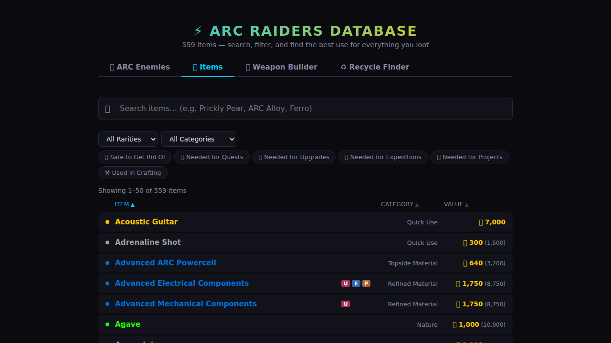
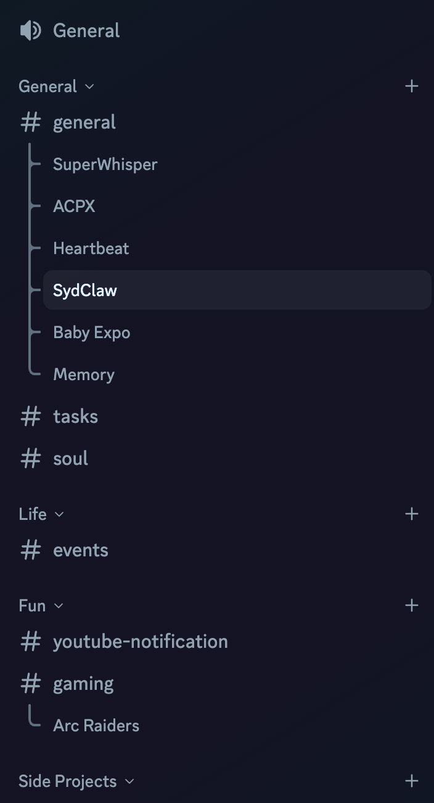

Message comes in → Gateway runs agent turn → Agent thinks + uses tools → Response goes back out
Also: Web Control UI · Mobile Nodes (iOS/Android) · Plugins — but the above is the core.
Features
A quick reference for the technically curious
💬 20+ Messaging Platforms
WhatsApp · Telegram · Discord · Signal · Slack · iMessage · LINE · Matrix · IRC · Teams · Twitch · Google Chat · Nostr · and more
🤖 Multi-Model Support
Claude · GPT · Gemini · Ollama · any OpenAI-compatible API. Switch models per task. Use local or remote.
📱 Mobile Nodes (iOS & Android)
Connect your phone as a device node — camera, location, voice, notifications, contacts, photos, screen recording.
🤖 Sub-Agents
Spawn background workers for coding, research, or parallel tasks. Orchestrate multiple agents from one conversation.
⏰ Cron Jobs & Heartbeats
Schedule recurring tasks, periodic check-ins, monitoring. The agent wakes up on its own and acts.
🧩 Skills & ClawHub
Modular capability packages. Community marketplace. Install skills like npm packages for your agent.
🎙️ Voice & Media
Voice note transcription, text-to-speech, image generation, file attachments in and out.
🧠 Workspace & Sessions
Persistent workspace files, conversation history across channels, auto-compaction, semantic memory search over your notes.
Context Is Everything
Same model. The only difference is what it knows.
Fresh session
What should I have for dinner?
Here are some popular options: pasta, stir fry, tacos, grilled chicken, salad...
Generic answer. Model knows nothing about you.
Mid-conversation
...yeah I'll try that recipe, I've been vegetarian for years
┈ 15 messages later ┈
What should I have for dinner?
Since you're vegetarian, how about a Thai basil tofu stir fry or a chickpea curry?
Better — it remembered from earlier. But resets next session.
🦞 OpenClaw
📂 Loaded before you type anything
SOUL.md · USER.md · AGENTS.md · TOOLS.md "Jack is vegetarian, lives in Sydney, wife Aom is Thai, loves spicy food..."
🔍 memory_search → thai-recipes.md
What should I have for dinner?
It's 28° in Sydney tonight — perfect for that som tum recipe Aom showed you last week 🌶️
Deeply personal from message one. Persists. You control all of it.
Same model, same mechanisms. The difference is what it knows before it starts thinking — and how much of that you control.
The Workspace
What makes your agent yours
~/.openclaw/workspace/
├── SOUL.md← personality, tone, boundaries
├── AGENTS.md← operating instructions
├── USER.md← who you are, your preferences
├── MEMORY.md← long-term memory (agent-maintained)
├── TOOLS.md← your setup specifics
├── HEARTBEAT.md← periodic check instructions
└── skills/← modular capabilities
Same model, same code, completely different agent. Two people running OpenClaw will have totally different experiences.
What People Are Doing With It
Real use cases from the community
📬
Inbox Management
Triage emails, clear spam, draft replies, morning rollup. One user cleared 10,000 emails on day one.
☀️
Daily Briefings
Weather, calendar, reminders, health stats, trending topics, relevant reading — delivered every morning.
🍳
Meal Planning & Groceries
Weekly meal plans, shopping lists sorted by store and aisle, dinner reminders. Saves an hour a week.
📱
Build From Your Phone
"Rebuilt my entire website via Telegram while watching Netflix." Code, deploy, manage — no laptop needed.
📋
Project Management
Break down projects, manage GitHub/Linear issues, research before meetings, create invoices, track work.
🏠
Smart Home & Life Admin
Homey integration, cost tracking, school test reminders, calendar conflict resolution, voice control.
What I'm Doing With It
Real examples, not hypotheticals
🎮 Personal Video Game Assistant
Built & iterated a full item, weapon, crafting & enemy database for a game I play. Hundreds of items, search, filters, Playwright tests.

👶 Gender Reveal Site
Live voting, AI-generated images, photo gallery, bilingual — built in one session.
📅 Calendar & Reminders
Birthday reminders, gift ideas, upcoming event alerts. Proactively checks my calendar and nudges me before things sneak up.
📊 Automated Monitoring
Media server health checks, OpenClaw update alerts, GitHub issue watching — reports posted to Discord daily.
🤖 Bot-to-Bot Collaboration
"Check when Daniel and I can meet next week for dinner." My agent and a friend's agent talk on Discord, coordinating across calendars and collaborating on designs.
🎤 This Slide Deck
Built by chatting with my agent in a Discord thread. It wrote the code, pushed to GitHub.
💬 Replaced ChatGPT & Claude Desktop
All my AI usage goes through OpenClaw now. Discord threads feel like chat sessions — but persistent and connected.
🧠 Memory System — Observes, reflects, consolidates. More in my next talk →
Where Does Your Data Go?
Know the boundaries before you share your secrets
🏠
Your Machine
Workspace files
Memory & history
Config & secrets
Session transcripts
✅ You control this
→ prompts →
→ messages →
→ fetches →
🤖 LLM Provider *
Anthropic, OpenAI, Google... Sees everything in your prompt: workspace files, memory, conversation
💬 Connected Services
Discord, WhatsApp, Calendar, Email... Can send messages, create events, post data on your behalf
🌐 The Internet
Web search, file downloads, APIs and websites
The agent can reach out to any public internet resource
* Self-hosted LLM? Prompts stay on your network. Remote LLM? Your context leaves your machine with every request.
What Could Go Wrong
Honest risks — you should know these before you start
💻 It runs commands on your machine
The agent has real access to your filesystem. A hallucination, misunderstood instruction, or malicious prompt injection can delete files, install things, or run destructive commands. In the worst case, a compromised agent could turn your machine into something you didn't intend.
🔌 It can act on your integrations
Whatever access you give it — messaging, calendar, email — it can use. A confused agent might post to the wrong channel, send an email you didn't intend, or create events.
💉 Prompt injection is real
Someone sends your agent a crafty message, and it follows their instructions instead of yours. Group chats and public channels are the biggest risk surface.
💸 Token costs add up
Always-on means always-spending. Heartbeats, cron jobs, long conversations — each one is an API call. Easy to burn through credits without realizing.
🤷 Large, fast-moving codebase
430K+ lines, updating frequently. You're trusting a lot of code you haven't read. Breaking changes happen. Audit what you can.
🔓 Know your identity model
On WhatsApp, the agent shares your phone number — messages appear to come from you. Use a dedicated number. On Discord and Telegram, it's a separate bot identity. Either way, allowFrom controls who can reach it.
Managing Your Risk
It can only do what you've given it access to
🧠 Be intentional about what you connect
Every integration you add is access you're granting — permanently, until you revoke it. Only connect what you need, when you need it, with the minimum scope to get the job done.
🔍 Understand what you're actually exposing
"Read my recent emails" might mean access to all emails — and possibly send permissions too. A calendar integration for reminders might also let it create or delete events. Know what each permission actually grants — not just what you intend to use it for.
⚠️ Every scope is an attack surface
The agent might misinterpret "clean up those emails" and delete everything. Or a prompt injection could exploit access you've granted. The more integrations connected, the bigger the blast radius — whether from a mistake or an attack.
🐢 The Trust Gradient
Start with chat only — no integrations
Add tools as you need them
Observe how it behaves with each one
Grant more access over time based on trust
Stay conscious of your total exposure
Like onboarding a new employee — more responsibility over time.
Where Should I Run This?
Pick your setup based on your comfort level
🖥️
Mac Mini / Dedicated Machine
The community favorite. Always on, low power, can run local models too.
✅ Full control
✅ Local LLM option
✅ No monthly cost ⚠️ Need to maintain it yourself
☁️
VPS / Cloud VM
Cheap Linux VM ($5-10/mo). Always on, nothing to maintain physically.
✅ Always available
✅ Easy to set up
✅ Remote by default ⚠️ Remote models only (usually)
⚠️
Your Daily Driver
Your laptop or desktop. Fine for experimenting, not great long-term.
✅ Nothing extra to buy
✅ Good for trying it out ⚠️ Agent has access to everything ⚠️ Stops when you close the lid
Raspberry Pi also works great for a low-cost always-on setup. Isolate the agent from your personal files.
Setup openclaw setup Creates config + workspace. Add your API key (Anthropic, OpenAI, etc).
3
Connect a channel openclaw channels login Scan QR for WhatsApp, paste token for Telegram/Discord.
4
Start the Gateway openclaw gateway Your agent is now live. Send it a message! 🦞
Pro Tip: Use Discord
My preferred setup — and why

🧵 Threading is a game changer
Start a thread for any topic — feels like opening a new ChatGPT session. Temporary, focused, searchable later. Way better than one long chat.
📂 Channels organize your life
Each channel gets its own session context. Use your agent to generate a channel structure that reflects your life and projects.
🔕 Mute the server, get pinged when it matters
I mute the whole server — the agent pings me when something needs attention. No notification fatigue. Check in on your own schedule.
⚡ Setup tips
• Dedicated private server (not a shared one)
• Set requireMention: false so it responds to everything
• Bot setup is a bit more involved than Telegram — use an AI to walk you through it
• No reason to pick just one — Telegram is great for getting started fast
The Real Point
OpenClaw is infrastructure for a personal AI agent that actually integrates into your life.
Not another chat UI. Not another coding tool.
An always-on assistant that knows you, learns from you,
and reaches out when something matters.